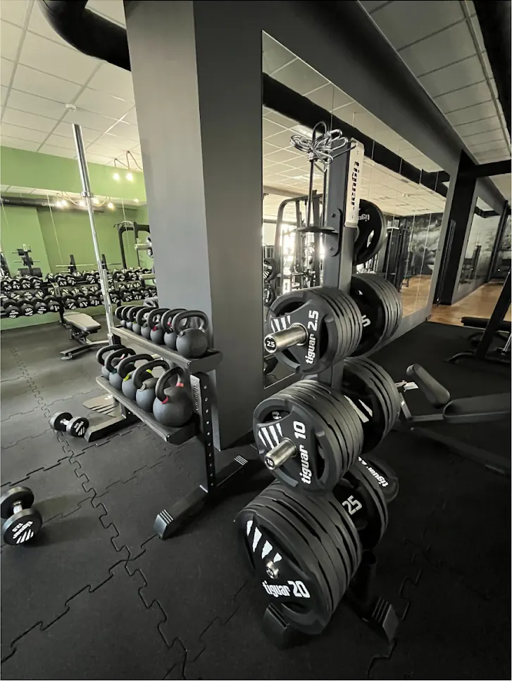
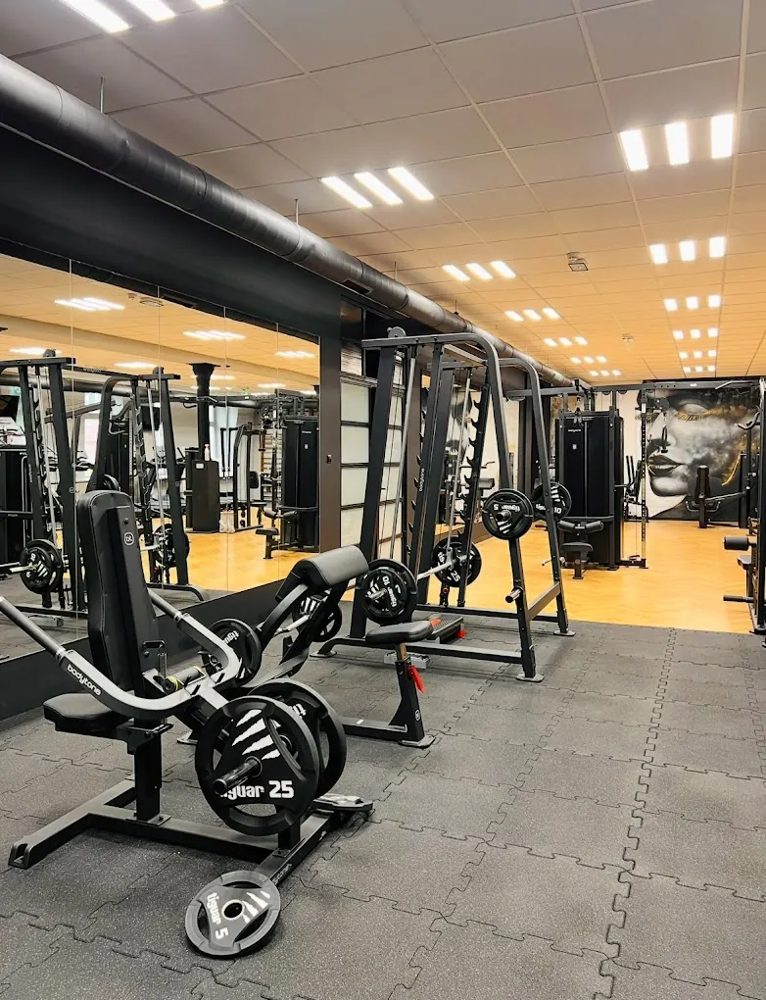
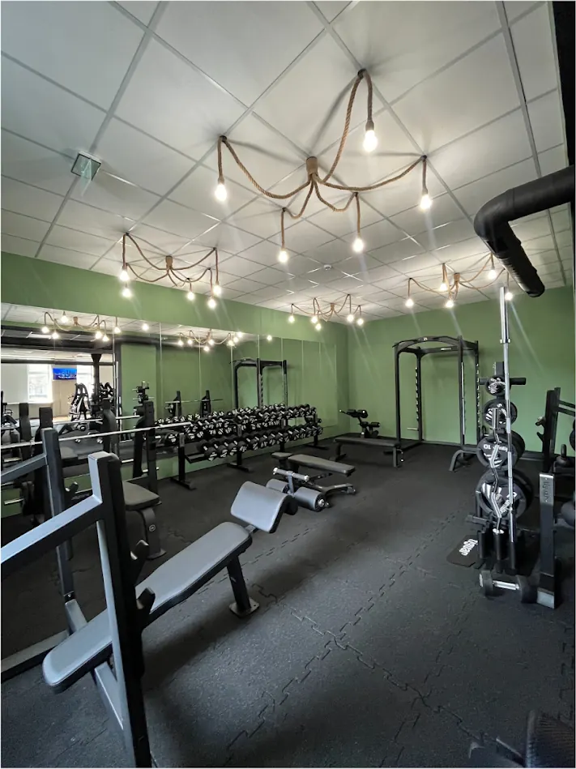
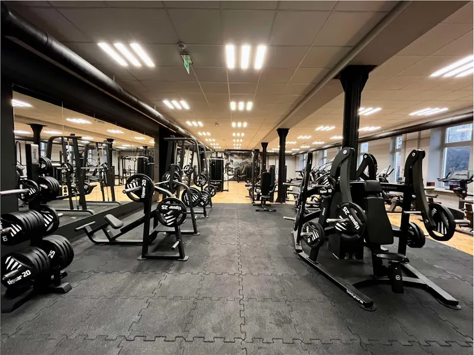
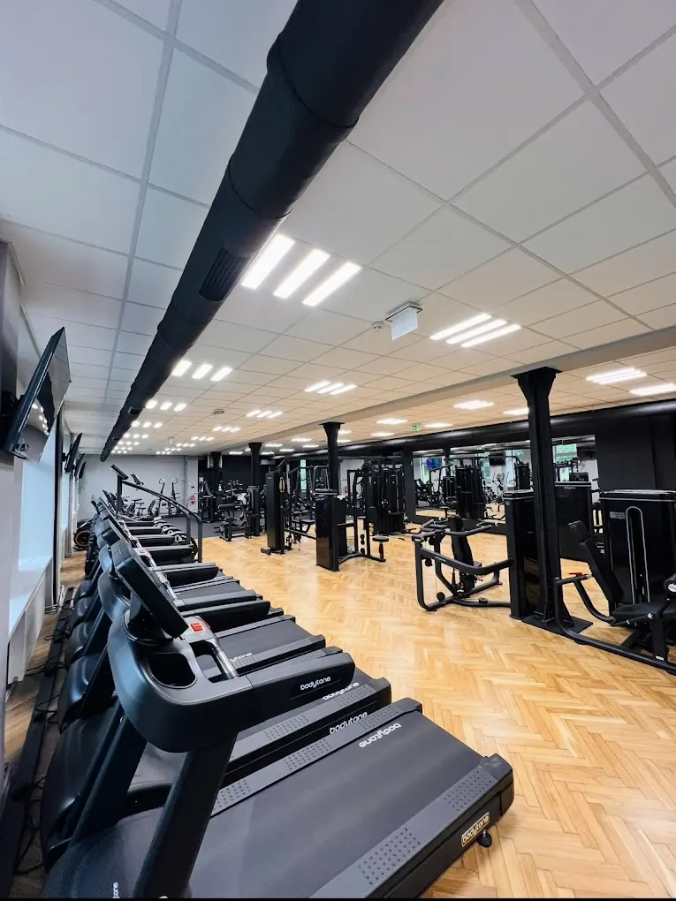
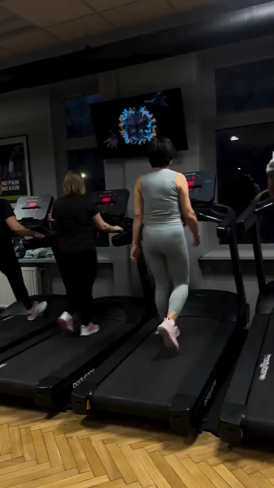
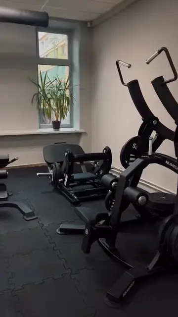
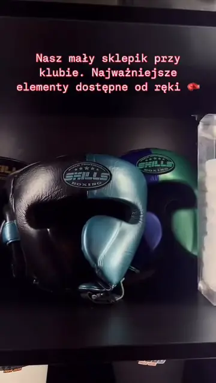

Wolne ciężary
Hantle, talerze, sztangi, kettlebells i ławki do ćwiczeń z wolnym obciążeniem.
Duża sala z wolnymi ciężarami, rackami, maszynami i rzędem bieżni. Otwieramy o 5:00, zamykamy o północy, więc trening zmieścisz przed pracą albo po drugiej zmianie.

Siłownia jest podzielona na strefy, więc osoba robiąca martwy ciąg nie stoi nad kimś na bieżni. Porządek i czystość na sali to coś, co w opiniach wraca regularnie.

Hantle, talerze, sztangi, kettlebells i ławki do ćwiczeń z wolnym obciążeniem.

Osobna sala z klatkami do przysiadów i wyciskania oraz ławkami regulowanymi.

Maszyny na wolne obciążenie, suwnica Smitha i wyciągi. Dobre na start i na dokładny trening izolowany.

Rząd bieżni, rowery stacjonarne i rower powietrzny. Na rozgrzewkę, na koniec treningu albo jako osobna sesja.
W tygodniu siłownia działa od 5:00 do północy. W sobotę trenujesz od 6:00 do 23:00, w niedzielę od 8:00 do 22:00.
W części godzin klub działa w trybie samoobsługowym, co bywalcy chwalą w opiniach. do uzupełnienia: w jakich godzinach działa samoobsługa i jak wygląda wejście bez recepcji
Karnet kupisz w recepcji. Klub ma też własną aplikację: v3klub.gymmanager.io.
| Poniedziałek | 5:00–0:00 |
|---|---|
| Wtorek | 5:00–0:00 |
| Środa | 5:00–0:00 |
| Czwartek | 5:00–0:00 |
| Piątek | 5:00–0:00 |
| Sobota | 6:00–23:00 |
| Niedziela | 8:00–22:00 |
Jeśli nie wiesz, od czego zacząć, albo wracasz po kontuzji, umów trening personalny. W klubie prowadzą je:
Termin ustalisz w recepcji albo telefonicznie: 788 463 717. Ceny treningów personalnych są w cenniku.
Tak wygląda pierwsze wejście do klubu krok po kroku.
Wybierz wejście jednorazowe albo karnet. Ceny są w cenniku.
Są szafki na ubrania i prysznice. Weź ręcznik, wodę i obuwie sportowe.
Wolne ciężary, racki, maszyny i cardio są w osobnych częściach sali.
Na trening personalny umówisz się w recepcji albo telefonicznie.
Zwykły poniedziałek w V3, nowe ustawienie maszyn i sklepik przy recepcji. Zobacz, ile jest miejsca i sprzętu, zanim przyjdziesz.
Rękawice, kaski i owijki kupisz na miejscu, więc na pierwszy trening sportów walki nie musisz szukać sprzętu w internecie.



Najlepsza siłownia w całym Jarosławiu. Świetny klimat, przestrzennie. Aż chce się po prostu trenować.
Super siłownia, bardzo fajne panie na recepcji, bardzo czysto, porządek, samoobsługa, najdłużej otwarta siłka w Jaro.
Bardzo dobrej jakości sprzęt, wszystko zadbane, czyste.
It's a very good location with parking spots, the staff is amazing, very friendly team. There is a small shop inside.
Fragmenty opinii z Map Google, skrócone. Wszystkie opinie
W sobotę od 6:00 do 23:00, w niedzielę od 8:00 do 22:00. Od poniedziałku do piątku od 5:00 do północy.
Tak, możesz kupić wejście jednorazowe w recepcji. Ceny wejść i karnetów znajdziesz w cenniku.
Tak. Szatnie mają szafki na ubrania i prysznice, obok są łazienki z umywalkami.
Tak, treningi personalne prowadzą Jacek i Dawid. Termin ustalisz w recepcji albo pod numerem 788 463 717. Więcej o nich na stronie trenerów.
Tak, w tym samym budynku jest Fight Zone (boks, kickboxing, MMA) i sala fitness. Godziny zajęć są w grafiku.
V3 Centrum Sportowe, Poniatowskiego 24, Jarosław. Zadzwoń albo przyjdź do recepcji, pokażemy klub i dobierzemy karnet.